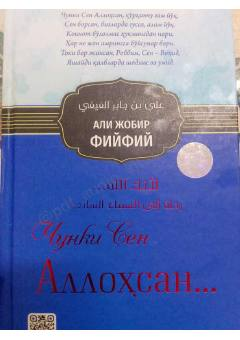

CSAllohning go'zal sifatlarini anglash orqali qalbni nurlantiradigan diniy asar.
Bu kitob Allohning go'zal ism-sifatlarini bayon etib, ulardan ilhom olib qalbda yashashga shavq uyg'otuvchi fikrlar, ibratli hikoyalar va hikmatlarni o'z ichiga oladi. Asl arabcha asar ('Li'annaka Allah') Ibrohim Nurulloh tomonidan o'zbek tiliga tarjima qilingan. Kitob o'quvchini Alloh taoloning buyukligi va Zotiga xos sifatlarini anglagan holda Unga yaqinlik hosil qilishga yo'llaydi.